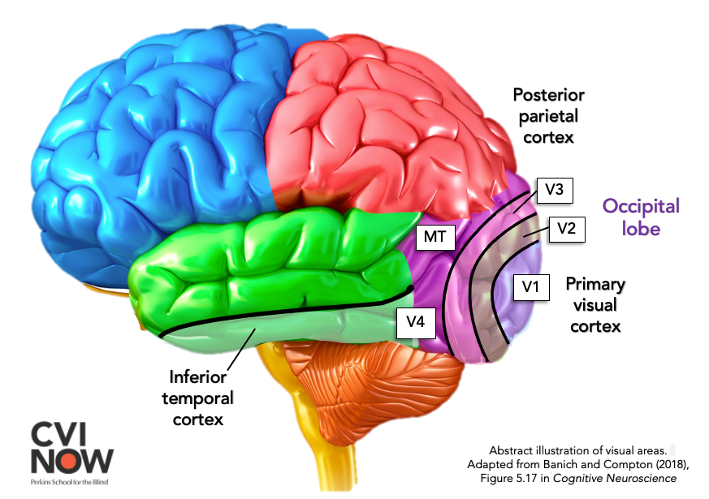

Neural Decoding of Visual Perception
CLIP-Guided Retrieval & Diffusion-Based Reconstruction
86.3 % CSLS Recall@1 on SHARED1000
Iepure Antoniu
supervised by Prof. univ. dr. Anca-Mirela Andreica
Babeș-Bolyai University • Faculty of Mathematics and Computer Science • AI
Cluj-Napoca • June 2026
[15 sec] "Good afternoon. My name is Iepure Antoniu, and my thesis presents a system
that identifies which image a person was viewing – using only their brain activity –
with 86.3% accuracy on a held-out benchmark of 1000 images. Let me walk you through how."
A person lies in an fMRI scanner, viewing a photograph.
From the brain signal alone – can we tell which image they saw?
Not the category. Not "an animal" or "a building."exact image – out of a thousand possibilities.
[30 sec] Start slow and cinematic. "Imagine a person in an fMRI scanner, viewing natural
photographs. The scanner records blood-oxygen-level-dependent activity from cortical voxels.
The question: from ONLY that brain signal – can we identify the EXACT image
they were viewing? Not the category. The SPECIFIC photograph from a gallery of a thousand."
TRANSITION: "Let me explain why this matters and what the thesis achieves."
The subject sees this image
One of 10,000 natural photographs (COCO)

The brain activates specific visual regions
We read from nsdgeneral ROI (covers V1–V4, IT, FFA, PPA, …)
[20 sec] "Look at this fruit bowl. Right now, as you look at it, your visual cortex
is processing it – V1 detects edges, V2 processes textures, V4 handles color and shape,
and IT recognizes objects. The fMRI scanner captures all this activity simultaneously
from these regions. That's what we decode from – 15,724 voxels spanning these visual areas."
TRANSITION: "Let me explain why this matters and what the thesis achieves."
Motivation & Scope
Why this problem?
fMRI captures rich visual information – but at voxel level , not image level
Bridging brain signals → image identity enablesassistive neurotechnology • cognitive neuroscience • BCI
This thesis: strict exact-image retrieval from a held-out gallery – not just category-level decoding
What does this thesis achieve?
Task: Identify exact image from 1000 options using only brain signalsMethod: Frozen fusion of 3 complementary CLIP-space decodersResult: 86.3% accuracy on held-out SHARED1000Add-on: Diffusion reconstruction (SDXL + IP-Adapter)
All experiments: Subject 01 only • Natural Scenes Dataset (Allen et al., 2022)
[45 sec] "Why does this matter? fMRI captures rich visual representations – but at the
level of blood-oxygen signals in cortical voxels. Bridging that gap to identify WHICH specific
image someone saw has applications in assistive neurotechnology and cognitive neuroscience.
Many prior works focus on category-level decoding or reconstruction quality. This thesis
takes a stricter approach: exact image retrieval from a held-out gallery.
What does the thesis achieve? A retrieval system that, given only brain activity, identifies
the exact photograph from a gallery of 1000 – with 86.3% accuracy.
The method: frozen score-level fusion of three complementary decoders.
All reported experiments use a single subject."
TRANSITION: "Before the model, let me define the data and evaluation protocol."
Dataset & Evaluation Protocol
Subject views photograph
10,000 unique COCO images
each shown 3x (30,000 trials)
7T fMRI records brain activity
ROI
15,724 voxels per trial
nsdgeneral ROI · 1.8mm resolution
Paired dataset
(fMRI vector, image) per trial
30,000 paired observations
Split by image identity (no leakage)
1000 held-out for SHARED1000 test
Evaluation task
Given new fMRI trial:
identify EXACT image from 1000
Chance: 0.1% (1/1000)
Our system: 86.3%
Example stimulus
NSD 8509 (COCO)
Data specification
Source NSD betas (GLMdenoise RR)Input Single-trial beta coefficients, not raw BOLD Preproc. Per-session z-score → ROI mask → 15,724-D Scanner 7T fMRI, 1.8 mm (Allen et al., 2022)
Evaluation protocol
Image-level split – no leakageSHARED1000 – fully held-out test3 reps per image – averaged at test
One training sample:
x =
[ 0.34, −1.12, 0.87, −0.05, 2.41, … ]
← 15,724 floats (z-scored betas)
|
y =
nsd_id 8509
← paired image identity
[50 sec] "How was the dataset built? Subjects were placed in a 7-Tesla fMRI scanner
and shown natural photographs – 10,000 unique COCO images, each shown 3 times.
30,000 total trials. On every trial, the scanner captures blood-oxygen activity
from 15,700 cortical voxels.
Importantly, we don't use raw fMRI time series. NSD provides pre-computed single-trial
beta coefficients — the output of a denoised general linear model. These capture the
trial-specific neural response with noise already removed by the NSD preprocessing pipeline.
We then z-score per session and mask to the nsdgeneral ROI.
[point to fruit bowl image] Look at this image right now. Just as you, the committee,
are looking at this photograph – that's exactly what the subjects did. And right now,
specific patterns are activating in YOUR brain corresponding to your internal
representation of this scene – based on your visual experience. The fMRI scanner
captures exactly those activation patterns. 15,724 numbers per trial.
Protocol: split by image identity – no leakage. 1000 images held out entirely as
SHARED1000. Task: new brain pattern -> identify which photo from 1000.
Chance: 0.1%. Our system: 86.3%."
TRANSITION: "With the benchmark defined, the key modeling choice is the target space."
Method
Predict Meaning, Not Pixels
Map brain activity into CLIP's semantic embedding space
where cosine similarity encodes semantic similarity.
CLIP provides a shared language between images, text, and predicted brain embeddings.
Formal mapping
\(\hat{\mathbf{z}}_i = f_\theta(\mathbf{x}_i), \quad f_\theta : \mathbb{R}^{15724} \to \mathbb{R}^{768}\)
nsdgeneral ROI voxels → ViT-L/14 CLIP embedding (L2-normalized)
If the predicted embedding lands near the true one,
animals
scenes
food
sports
decoded fMRI
ground truth
cos ≈ 0.97
CLIP ViT-L/14 Embedding Space (768-D, L2-normalized)
[50 sec] "The core insight: don't reconstruct pixels – predict MEANING.
OpenAI's CLIP model maps images into a 768-dimensional unit hypersphere where
cosine similarity equals semantic similarity. CLIP provides a shared language
between images, text descriptions, and – crucially – our predicted brain embeddings.
Our decoder maps ~15,700 brain voxels from the nsdgeneral cortical region into this space.
If the predicted embedding lands near the true embedding, nearest-neighbour retrieval
identifies the exact image from the gallery."
TRANSITION: "Let me show you the strongest expert in our system."
V61a: Dominant Expert Architecture
fMRI Input
15,724 voxels
nsdgeneral ROI
z-scored, float32
per-session normalized
15,724-D
MLP Encoder
8192 → 8192
4096 → 2048
skip
GELU · Dropout 0.25 · Residual
4 layers · 28M parameters
LayerNorm after each block
2,048-D
vMF Decoder
μ
direction
κ
confidence
L2-normalize
softplus
output on unit hypersphere S^(d-1)
768-D
Token Target
197,376-D
...
257 tokens × 768-D
ViT-L/14 (all spatial tokens)
spatial + semantic structure
MC-TTA-16 (inference)
16 stochastic passes · spherical average · re-normalize
83.1%
CSLS R@1
+4.0 pp from TTA
w = 0.7
Wide MLP High-D noisy signals need broad layers + residual skip connections
Token target 257 spatial tokens preserve spatial + semantic structure (not just CLS)
MC-TTA-16 κ-enabled stochastic passes, averaged on the sphere: +4 pp
[35 sec] "Let me zoom into the dominant expert – V61a – which carries 70% of the fusion weight.
The architecture: 15,724 nsdgeneral voxels pass through a wide MLP encoder with 4 layers –
8192, 8192, 4096, 2048 – with residual blocks and dropout. The width is necessary because
brain signals are high-dimensional but noisy, and we need distributed representations.
The decoder outputs a direction mu and concentration kappa on the unit hypersphere,
targeting a 197K-dimensional token space – that's all 257 spatial tokens from ViT-L/14,
not just the pooled CLS token. This preserves spatial structure.
At inference: 16 stochastic forward passes with dropout active, averaged on the sphere,
re-normalized. This MC-TTA gives +4 percentage points – our single biggest improvement
on V61a, from 79.1% to 83.1%.
V62a and V66a use the same vMF-NCE loss but map to 768-D CLS space – different
geometry, different failure modes."
TRANSITION: "Now let me show you the full system that combines three such experts."
System Architecture: Triple Expert Fusion
7T fMRI
NSD subj01
15,724 nsdgeneral voxels
Preprocessing
per-session z-score
image-level split
no leakage across train/val/test
V61a – Token Expert
197K-D · vMF-NCE · MC-TTA-16
w = 0.7
V62a – CLS Expert
768-D · ViT-L/14 CLS target
w = 0.1
V66a – ROI Expert
768-D · ROI-pretrained CLS
w = 0.2
FROZEN
Score Fusion
CSLS (k=3)
z-norm · weighted sum
86.3%
CSLS R@1
30,000 trials × 3 reps
3 independently trained experts
weights selected on val, frozen
SHARED1000
[50 sec] "The architecture, left to right:
7T fMRI from NSD Subject 01, masked to 15,724 nsdgeneral voxels, per-session z-scored.
Three independently trained decoder experts – all using vMF-NCE as the core training loss:
– V61a: maps to 197K-dimensional token space with Monte Carlo test-time augmentation,
strongest alone at 83.1%. The kappa uncertainty from vMF enables principled MC-TTA.
– V62a: maps to 768-D CLS space, weaker at 47.5% but geometrically different.
– V66a: maps to 768-D with ROI pretraining, 39.1% alone.
Their CSLS-corrected scores are z-normalized and combined with fixed weights 0.7/0.1/0.2.
Evaluated on SHARED1000: 1000 images never seen during training or validation."
TRANSITION: "But how do we TRAIN these experts on a normalized space? That requires a special loss."
Training Loss: vMF-NCE
μ₁
κ = high
(confident prediction)
μ₂
κ = low
(uncertain prediction)
origin
Unit hypersphere S^(d−1), d = 768
CLIP embeddings are L2-normalized – they live on the unit hypersphere.
The von Mises–Fisher distribution models directional uncertainty:
\(p(\mathbf{z} \mid \mathbf{x}) = C_d(\kappa)\,\exp\!\bigl(\kappa\,\boldsymbol{\mu}^\top \mathbf{z}\bigr)\)
\(\boldsymbol{\mu}\) = predicted direction | \(\kappa\) = concentration | Banerjee et al., 2005
Geometric fit: cosine-native loss on the sphereContrastive: vMF-NCE ranks against hard negativesUncertainty: \(\kappa\) per trial → enables MC-TTA
Impact: MC-TTA-16 (enabled by \(\kappa\))
79.1% → 83.1% (+4.0 pp) – all 3 experts use vMF-NCE
[25 sec] "How do we train these experts? Since CLIP embeddings live on a hypersphere,
we use von Mises-Fisher – the natural probability distribution for directions on a sphere.
Look at the visualization: mu is the predicted direction, kappa is concentration.
High kappa means the model is confident – tight cluster. Low kappa means uncertain –
spread out. Our loss, vMF-NCE, combines this directional likelihood with contrastive
ranking against hard negatives.
The key payoff: kappa gives us per-trial confidence, enabling 16-draw Monte Carlo
test-time augmentation. That's +4 percentage points on V61a alone.
All three experts use vMF-NCE as their training loss."
TRANSITION: "Now – the contribution: how we combine these experts."
Core Contribution: Frozen Score Fusion
\(s_{\text{final}}(i,j) \;=\; 0.7\,\tilde{s}_{\text{V61a}} \;+\; 0.1\,\tilde{s}_{\text{V62a}} \;+\; 0.2\,\tilde{s}_{\text{V66a}}\)
where \(\tilde{s}_e = (s_e^{\text{CSLS}} - \mu_e)/\sigma_e\) | CSLS at k = 3 | weights selected on validation, frozen before SHARED1000
Aggregate evidence
R@1 R@5 MRR
V61a alone 83.1% 96.9% 0.892 Triple fusion 86.3% 98.0% 0.914 Gain +3.2 +1.1 +0.022
Why it works
Experts differ in target space (197K vs 768-D), objective , and inductive bias – they fail on different queries.complementary correction , not redundant ensembling.
[65 sec – intellectual core of the talk]
"This is the main contribution. At inference: each expert produces CSLS-corrected scores
against the full gallery. We z-normalize per expert – so scale differences don't dominate –
then apply a fixed weighted sum. Weights are tuned on validation and FROZEN before test.
No data leakage. No test-time tuning.
The table shows the evidence: V61a alone reaches 83.1%. The triple fusion reaches 86.3%.
That's +3.2 percentage points – at least 32 additional images correctly identified.
Why does this work? The experts target different embedding spaces and have different
failure modes. V61a might miss a query that V62a gets right, and vice versa.
The R@5 rise from 96.9% to 98.0% is the signature of complementary correction –
if experts were redundant, they'd reinforce the same mistakes.
I say 'empirically stronger' – I have not run a McNemar test, so I report the
observed improvement without claiming formal statistical significance."
TRANSITION: "What does this achieve on the benchmark?"
Results
SHARED1000 Retrieval
86.3%
CSLS Recall@1
95% CI [84.0, 88.4] • Clopper–Pearson exact • n = 1000
Chance level: 0.1% for 1-out-of-1000 retrieval
0.914
Mean Reciprocal Rank
+3.2 pp over best single expert (83.1%)
+9.1 pp over prior 2-expert baseline (77.2%)
[50 sec – let the number breathe]
"86.3% Recall@1. [PAUSE for effect]
For 863 out of 1000 held-out test images, the system identifies the EXACT photograph
from a gallery of a thousand options. Using only brain activity.
Chance is 0.1% – we are 863 times above chance.
R@5 = 98% – almost always in the top 5. MRR = 0.914 – the median rank is 1.
That's +3.2 percentage points over V61a alone (the best single expert at 83.1%),
and +9.1 points over our prior V35+N1v28a two-expert baseline at 77.2%.
The confidence interval is exact: Clopper-Pearson on 863 successes out of 1000."
TRANSITION: "Before showing qualitative examples, let me put our result in context."
Context in the Literature
We answer a narrower question: how to decompose and fuse information in a single-subject retrieval setting.
Retrieval (Identification)
Method Gallery R@1
MindEye
982 imgs
93.2%
MindEye2
300 batch
97.4%
Brain Diffuser
no retrieval (recon. only)
Ours 1000 imgs
86.3%
Reconstruction (Pixel Quality)
Method PixCorr SSIM Alex(5)
MindEye
.309
.323
97.8%
MindEye2
.320
.341
98.3%
Brain Diffuser
.254
.356 96.2%
Ours 86.2% Alex(5) 2-way (auxiliary add-on)
Reconstruction-first (Brain Diffuser)
fMRI → VAE latent → Latent Diffusion → generate new pixels
Retrieval-first (This thesis)
fMRI → CLIP embedding → CSLS retrieval → identify exact image
Different galleries, subjects, target spaces, and protocols. Metrics are in the same family but not directly comparable .
[40 sec] "Let me put our result in context. There are two metric families here.
On the LEFT: retrieval. MindEye identifies the exact image with 93.2% accuracy in a
gallery of 982 images. MindEye2 reaches 97.4% but uses 300-image batches and 8 subjects.
We reach 86.3% in a gallery of 1000 images with a single subject. Brain Diffuser does
NOT do retrieval at all — they skip this entirely.
On the RIGHT: reconstruction quality. Brain Diffuser is the strongest here on SSIM (.356)
because that is exactly what they optimize for. They regress fMRI directly to a VAE latent
and run latent diffusion to GENERATE new pixels. They never search a gallery.
We are RETRIEVAL-FIRST: our primary metric is can we identify the EXACT stimulus.
Our 86.3% means given a brain signal, we find the exact image 86.3% of the time
out of 1000. Reconstruction is only a controlled add-on — we report 86.2% AlexNet(5)
2-way identification to show downstream utility, but it's not our primary contribution.
The key insight: these are fundamentally different questions. 'Can we generate something
that looks similar?' versus 'Can we identify which exact image was seen?'"
TRANSITION: "Let me show specific examples of what the experts retrieve."
Qualitative Retrieval Evidence
Two SHARED1000 examples: per-expert top-1 retrieval. Fusion preserves V61a's correct rank.
(Thesis Figures 5.6–5.7)
Query (GT)
V61a
V62a
V66a
Fusion
Fusion preserves V61a's correct retrievals even when weaker experts disagree.
The +3.2pp gain comes from the disjoint subset where V61a fails but others provide corrective evidence.
[50 sec] "Two real SHARED1000 examples from the thesis. Each column is one expert's top-1.
V61a – the dominant expert – gets both correct at rank 1.
V62a fails with semantically plausible but wrong images.
V66a fails on both.
The FUSED result: both correct.
Important scientific point: these illustrate that fusion PRESERVES V61a's correct results
– it doesn't degrade them. The actual +3.2pp gain comes from the disjoint subset where
V61a fails but the weaker experts provide corrective evidence."
TRANSITION: "Let me show exactly what the wrong retrievals look like."
What Each Expert Retrieves
Actual top-1 retrieved images per expert (Thesis Figures 5.5–5.6)
(a) Surfer query (NSD 8262) – V61a and Fusion correct; V62a/V66a retrieve semantically related but wrong scenes
(b) Seagulls query (NSD 55649) – V61a and Fusion correct; V62a retrieves sheep flock, V66a retrieves crowd
[40 sec] "Now let me show you what the WRONG retrievals actually look like – these are
the exact figures from the thesis.
For the surfer query: V61a gets it perfectly – same image at rank 1. V62a retrieves a
person with arm raised – semantically related (human + motion) but completely wrong image,
rank 5. V66a returns a person jumping at rank 8. Fusion: correct.
For the seagulls: V61a correct again. V62a retrieves a flock of sheep on a hillside –
the model captured 'group of animals' but wrong species, rank 4. V66a retrieves a crowd
of people with livestock at rank 12. Fusion: correct.
The errors are semantically plausible but geometrically different from V61a's error space.
That geometric independence is exactly what makes score fusion work."
TRANSITION: "Beyond retrieval, the thesis demonstrates a downstream application."
Downstream: Image Reconstruction
Thesis contribution = retrieval.
Fusion Top-1
retrieved image
→ IP-Adapter visual
SDXL 1.0
IP-Adapter conditioning
+ fMRI-CLIP → text pathway
best-of-16 · uncertainty strength
Reconstruction
preserves semantic
+ adds low-level detail
Anchor-dependent: quality bounded by retrieval accuracy
Design insight: SDXL + IP-Adapter removed the low-level vs. semantic trade-off from the earlier SD 2.1 pipeline.
Results (n = 141 SHARED1000)
Metric Retrieval Diffusion
SSIM 0.202 0.214 CLIP image sim. 0.744 0.750 PSNR (dB) 9.539 9.602 AlexNet(5) 2-way – 86.2%
Scope & honesty
Anchor-dependent – conditions on fusion top-1137 non-perfect examples evaluated
Modest, non-degrading across all buckets
Not protocol-comparable to MindEye2
[40 sec] "The thesis contribution is retrieval, not reconstruction.
The reconstruction add-on takes the fusion top-1 as an IP-Adapter visual anchor for SDXL,
with the fMRI-predicted CLIP embedding injected into the text pathway.
For perfect retrievals – which we get 86.3% of the time – the anchor IS the ground truth,
so reconstruction only adds low-level detail. For non-perfect cases, it refines
the anchor toward the brain signal.
Results: modest but non-degrading. 86.2% AlexNet(5) 2-way on 137 non-perfect examples.
This is anchor-dependent and not directly comparable to MindEye2."
TRANSITION: "To summarize the contributions and limitations..."
Contributions & Scope
Contributions
Leakage-free fMRI → CLIP retrieval pipelineImage-level splits, single subject, reproducible
Three complementary decoder expertsToken / CLS / ROI – different target geometries
Frozen CSLS score fusion → 86.3% R@1 CI [84.0, 88.4] • no test-time tuning
SDXL + IP-Adapter reconstruction add-on86.2% AlexNet(5) 2-way identification
What didn't work
Purely probabilistic vMF – unstable without \(\kappa\) regularization
Richer token targets → degraded geometry (hubness)
Learned fusion gates overfit; frozen scores more robust
Limitations & Future
Single subject • Fixed gallery (1000) • Anchor-dependent recon.
Future: multi-subject, learned fusion, per-query rescue analysis
[60 sec] "To summarize – four contributions:
(1) A complete, leakage-free pipeline from fMRI to CLIP retrieval.
(2) Three complementary experts targeting different embedding spaces.
(3) Frozen cross-architecture score fusion reaching 86.3% with exact CI.
(4) An SDXL reconstruction add-on demonstrating downstream utility.
But equally important – what DIDN'T work:
Purely probabilistic decoders were unstable without careful kappa regularization.
Richer token targets sometimes degraded retrieval geometry due to hubness.
And learned fusion gates overfit to training patterns – frozen score fusion
proved more robust than any trainable fusion we tried.
These negative results narrow the future search space and are as scientifically
valuable as the positive ones.
Limitations: single subject, fixed gallery, anchor-dependent reconstruction.
Future: multi-subject generalization, learned end-to-end fusion, per-query analysis."
Thank you.
I welcome your questions.
86.3% R@1
CI [84.0, 88.4]
+3.2 pp over best single
Iepure Antoniu • Prof. dr. Anca-Mirela Andreica • UBB FMI AI • June 2026
[10 sec] "Thank you for your attention. I'm happy to take any questions."
BACKUP
Complete Retrieval Results
System Raw R@1 CSLS R@1 R@5 MRR Med. w
V30e compact – 49.2% – – – – V30e + rerank – 51.5% – – – – V35 + N1v28a (2-expert) – 77.2% – – – – V61a single (no TTA) 66.0% 79.1% – – – – V61a + MC-TTA-16 67.3% 83.1% 96.9% 0.892 1 0.7 V62a (768-D CLS) 39.9% 47.5% 80.3% 0.621 2 0.1 V66a (768-D ROI) 35.5% 39.1% 73.8% 0.545 2 0.2 Triple Fusion 72.1% 86.3% 98.0% 0.914 1 frozen
Thesis Table 5.1 • SHARED1000 (1000 held-out images) • Subject 01 only • All numbers from triple_fusion_shared1000_86.json
BACKUP
Evaluation Protocol Details
Data Split
Split at image level , not trial level
Each unique image assigned to exactly one of: train / val / test
3 repetitions per image → all 3 stay in the same partition
SHARED1000: 1000 images held out entirely from train & val
No image leakage across any partition
Metrics & Fusion Protocol
Recall@K: fraction of queries with GT in top-KMRR: mean of 1/rank across all queriesCSLS (k=3): hubness-corrected similarityZ-normalized score fusion: per-expert \((\cdot - \mu)/\sigma\)Weights: selected on validation, frozen before SHARED1000No test-time tuning: weights never updated on test data
Confidence interval: Clopper–Pearson exact binomial CI on 863/1000 successes → [84.0%, 88.4%] at 95% confidence.
BACKUP
Defense Q&A: Key Clarifications
Question Answer
Is this mind reading?
No. It is controlled visual perception decoding from fMRI under a fixed-gallery retrieval protocol.
Does it reconstruct arbitrary thoughts?
No. It retrieves the viewed image from a held-out candidate set of 1000 known images.
Why CLIP?
CLIP provides a semantic embedding space where visual and textual concepts are aligned, enabling cross-modal retrieval via cosine similarity.
Why fusion?
The experts use different target spaces and objectives, providing complementary ranking signals that reduce errors on different queries.
Main limitation?
Single-subject evaluation (subj01) and fixed-gallery retrieval. Generalisation to other subjects and open-vocabulary retrieval remain future work.
BACKUP
Mathematical Formulations
vMF-NCE (training loss for V61a)
\(\mathcal{L}_{\text{vMF-NCE}} = -\frac{1}{N}\sum_{i=1}^{N} \log \frac{\exp\bigl(\kappa_i \cos(\hat{\mu}_i, z_i)\bigr)}{\sum_{j=1}^{N}\exp\bigl(\kappa_i \cos(\hat{\mu}_i, z_j)\bigr)}\)
CSLS hubness correction (Conneau et al., 2018)
\(\text{CSLS}(x,y) = 2\cos(x,y) - r_T(x) - r_S(y)\)
\(r_T(x) = \frac{1}{k}\sum_{y' \in \mathcal{N}_k(x)}\cos(x,y')\) – mean similarity to k nearest neighbours; penalises hub vectors
Frozen triple fusion (inference only)
\(s_{\text{final}}(i,j) = \sum_{e \in \{61a, 62a, 66a\}} w_e \cdot \frac{s_e^{\text{CSLS}}(i,j) - \mu_e}{\sigma_e}\)
BACKUP
Manifold Alignment Evidence (V62a)
Evidence type Metric (SHARED1000) Interpretation
Hubness control Gini: 0.386 → 0.226 (cosine → CSLS) CSLS substantially reduces hubness Representational geometry RSA Spearman ρ = 0.389 [0.387, 0.392] Stable monotonic structure preserved Local neighbourhood Overlap@10 = 0.40 (random: 0.01, lift ×40) CLIP-space neighbourhoods preserved Language-space probe Agreement@5 = 0.833 (29 concepts) Decoded embeddings agree with text probes Semantic axes Mean Spearman = 0.673 across 10 axes Interpretable concept directions preserved
All manifold analyses are on the V62a single expert under SHARED1000 protocol,
not on the fused system (which operates at score level, not embedding level).
BACKUP
Experimental Evolution
Phase 1–3
Pipeline Stabilization
V1–V30: leakage-free eval
Phase 4–5
Multi-Head Design
V30–V35: compact + rerank
Phase 6–7
Expert Training
V60–V66: token + CLS + ROI
Phase 8
Frozen Fusion
Final exported system
49.2% →
51.5% →
77.2% →
86.3%
SHARED1000 CSLS Recall@1 progression (subj01)
BACKUP
Related Work
Work Approach Relation to this thesis
Allen et al., 2022 NSD (7T fMRI data) Data source • SHARED1000 benchmark Takagi & Nishimoto, 2023 SD-based reconstruction Reconstruction-first (we are retrieval-first) Ozcelik & VanRullen, 2023 Brain Diffuser Informs our SDXL add-on MindEye (Scotti et al., 2023) CLIP retrieval + diffusion Retrieval-first framing • AlexNet metric MindEye2 (Scotti et al., 2024) Multi-subject scaling Strongest precedent • not protocol-comparable This thesis Frozen expert fusion 86.3% CSLS R@1 (subj01 only)
Direct numerical comparison to MindEye2 is not valid: different subject counts,
target spaces, gallery sizes, and split protocols. We answer a narrower question
about information decomposition and fusion in the single-subject setting.
BACKUP
Reproducibility & Artifact Tracing
Claim Artifact path
Expert configs configs/experiments/{V61a,V62a,V66a}*.yamlTriple fusion (86.3%) experimental_results/fusion_triple_86/triple_fusion_shared1000_86.jsonReconstruction (n=141) experimental_results/reconstruction_sdxl_ipa/Qualitative panels thesis/v62_thesis/panel_metadata.jsonManifold evidence outputs/shared1000_eval/v62a/manifold_evidence.json
Every number in this presentation traces to a versioned artifact.Git repo • fixed seeds • YAML configs • frozen weights before SHARED1000
BACKUP
Technologies & Data
Tech Stack
Language Python 3.13 Framework PyTorch 2.x (bf16, AMP) CLIP backbone OpenAI ViT-L/14 (768-D) Diffusion model SDXL 1.0 + IP-Adapter Hardware NVIDIA H100 80GB Config system YAML + Makefile Evaluation CSLS retrieval + AlexNet n-way
Data: Natural Scenes Dataset
Source Allen et al., 2022 Resolution 7T fMRI, 1.8mm isotropic Subject subj01 (single-subject study) Trials 30,000 (3 reps × 10,000 images) ROI nsdgeneral (15,724 voxels) Benchmark SHARED1000 (held-out) Split protocol Image-level, no leakage
BACKUP
Expert Architecture Details
V61a (Token) V62a (CLS) V66a (ROI)
Target dim 197,376 (257×768) 768 768 Encoder MLP [8192, 8192, 4096, 2048] MLP [8192, 8192, 4096, 2048] MLP backbone + [1024] head Training loss vMF-NCE + MSE + κ-reg + SoftCLIP vMF-NCE + MSE + κ-reg + SoftCLIP vMF-NCE + SoftCLIP + R-drop Batch size 16 64 128 Inference TTA MC-dropout, 16 draws None None Fusion weight 0.7 (dominant) 0.1 (auxiliary) 0.2 (auxiliary)
Thesis Table 5.3 • Subject 01 only • Values from YAML configs of V61a, V62a, V66a